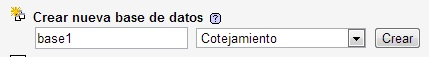
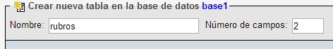
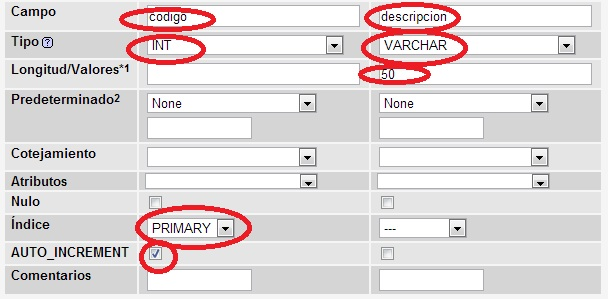
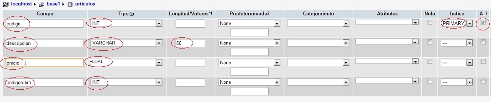
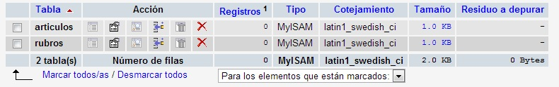

En conceptos anteriores vimos un conjunto de funciones para el acceso a una base de datos de MySQL: mysqli_connect, mysqli_query, mysqli_fetch_array etc.
Pero la extensión mysqli nos suministra dos formas de comunicarnos con la base de datos MySQL, una interfaz procedimental que es la que hemos visto en conceptos anteriores y una interfaz orientada a objetos.
Ahora vamos a ver la sintaxis si queremos utilizar la extensión mysqli pero mediante esta interfaz orientada a objetos.
Para poder entender estos conceptos es necesario que haya trabajado con PHP orientado a objetos, en caso de no haberlo hecho puede leer el siguiente tutorial PHP Ya Orientado a Objetos y luego continuar este curso.
Esta extensión nos suministra dos clases fundamentales:
mysqli mysqli_result
Para conectarnos con el motor de base de datos y seleccionar una base de datos debemos crear un objeto de la clase mysqli:
$mysql=new mysqli("localhost","root","","base1");
Para crear un objeto debemos utilizar el operador new e inmediatamente disponer el nombre de la clase (en este caso la clase se llama mysqli) y entre paréntesis los parámetros del constructor. El contructor recibe los mismos parámetros que habíamos visto con la interfaz procedimental, es decir el nombre del servidor, el usuario, la clave y el nombre de la base de datos.
La variable $mysql almacena la referencia del objeto que se acaba de crear de la clase mysqli.
Para saber si la conexión y selección de la base de datos se efectuó en forma correcta debemos acceder a la propiedad connect_error de la clase mysqli, dispondremos una sintaxis similar a esta:
if ($mysql->connect_error)
die('Problemas con la conexion a la base de datos');
$mysql es un objeto de la clase mysqli y mediante este objeto accedemos a la propiedad connect_error, si el if se verifica falso es que la propiedad connect_error almacena un NULL ya que no hay un error en la conexión al servidor y base de datos indicado cuando creamos el objeto.
Para ejecutar una consulta la clase mysqli tiene un método llamado query, la sintaxis para llamar a este método tendrá una estructura similar a:
$mysql->query("insert into rubros(descripcion) values ('$_REQUEST[descripcion]')") or
die($mysql->error);
Al método query le pasamos como referencia un string con el comando SQL que queremos que se ejecute, si hay algún error en el comando SQL el método query retorna un false y se ejecuta el comando seguido al operador or.
Con la función die detenemos la ejecución del programa y accedemos a la propiedad error que almacena el error generado al tratar de ejecutar el comando SQL.
Finalmente llamamos al método close para cerrar la conexión:
$mysql->close();
Implementaremos una serie de páginas para efectuar el ABM (Altas, Basjas, y Modificaciones) y listados de una serie de tablas empleando la extensión mysqli orientada a objetos.
Crearemos una base de datos base1 (si ya la tenemos de conceptos anteriores procederemos a agregar las tablas a dicha base de datos)
Crearemos dos tablas llamadas "rubros" y "articulos", en la primera almacenaremos un listado de rubros de un supermercado y en la tabla "articulos" almacenaremos la descripción, precio y código de rubro que pertenece el artículo.
Desde el PhpMyAdmin procedemos a crear las dos tablas, primero indicamos el nombre de la tabla:
y seguidamente indicamos la estructura de la tabla rubros:
y la tabla articulos tiene la siguiente estructura:
Ya tenemos las dos tablas creadas dentro de nuestra base de datos "base1":
Puede descargar los comandos SQL para proceder las dos tablas de aquí, solo tiene que pegar este código en la pestaña de SQL del PhpMyAdmin, previo cree y seleccione la base de datos base1.